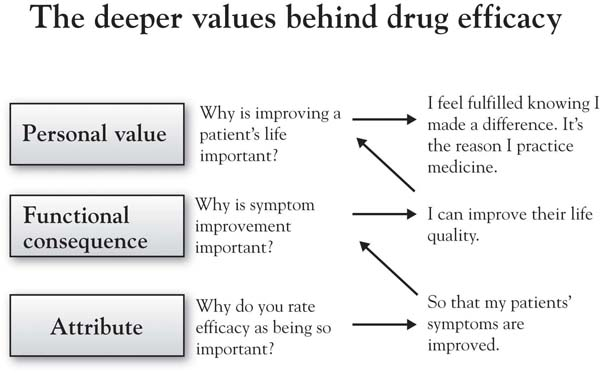

Throughout the book, we have alluded to the importance of understanding customer value from a deeper perspective. In sum, behind the customer attributes we have identified are the deeper reasons or values we discussed in Chapter 4 "The Meaning of Value". In Annie’s case, she wanted to focus on what she found to be the most important attribute to doctors—efficacy. Efficacy is shorthand for effectiveness—to what extent does the drug produce the desired remedy? Figure 9.4 "Ladder for Doctors on the Attribute Efficacy" presents the ladder that summarizes Annie’s conversations with doctors regarding the reasons why efficacy is an important driver of decisions. This insight is straightforward: doctors do not seek to prescribe a particular drug simply because it is more efficacious—the efficacy is important because it reinforces the doctor’s sense of fulfillment in helping improve patients’ quality of life. While in hindsight this seems obvious, in fact it is not obvious at all if you do not ask the questions. The product’s positioning and communications can be much more powerful if it is connected to the customer’s deeper values (i.e., there will be a greater sense of patient care and personal satisfaction for this objectively better drug). Further, understanding the doctor’s goal at a deeper level gets us thinking about how to both communicate and, in thinking through broader solutions, support his or her efforts—for example, by developing new ways to ensure that patients take required dosages.
Figure 9.4 Ladder for Doctors on the Attribute Efficacy
